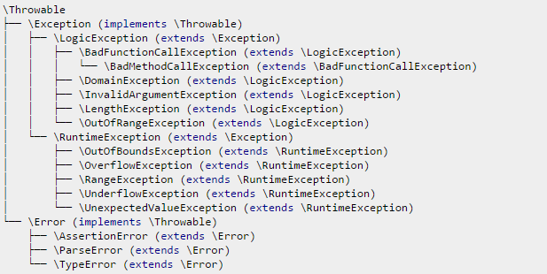

Стандартные исключения в PHP. Когда какое применить.
Все программисты PHP должны уметь работать с исключениями. Есть много документации и хороших статей по работе с ними. Все используют базовый класс Exception в своем коде, а, дорастая до определенного уровня, начинают плодить собственные классы исключений. Само по себе это делает код более удобочитаемым и управляемым, но часто ведет к необоснованному разрастанию количества классов в коде. Почему-то далеко не все знают и правильно используют стандартные классы исключений PHP, два из которых относятся к самому языку и несколько — к стандартной библиотеке SPL. PHP 7 к этой небольшой коллекции добавил еще несколько классов. В этой статье я хотел описать, в каких случаях применяются все эти классы, чтобы путаницы больше не было.
Полная иерархия исключений в PHP7 имеет такой вид:

Здесь PHP7 добавил базовый тип Throwable, тип Error и его подтипы AssertionError, ParseError и TypeError. Остальные типы доступны с версии PHP 5.1.0 или еще раньше.
Итак, рассмотрим их по порядку.
Throwable
Throwable — это даже не исключение, а интерфейс, который реализуют все остальные рассматриваемые классы. Добавлен в PHP7.
Exception
Базовый класс для исключений. Стандартная библиотека SPL вводит две группы исключений, два надкласса: для исключений в логике: LogicException и исключений времени исполнении RuntimeException.
LogicException
Используется, когда ваш код возвращает значение, которое не должен возвращать. Часто вызывается при разных багах в коде. Потомки этого класса используются в более специализированных ситуациях. Если ни одна из них не подходит под ваш случай, можно использовать LogicException.
BadFunctionCallException
Используется, когда вызываемой функции физически не существует или когда в вызове используется неверное число аргументов. Редко бывает нужно.
BadMethodCallException
Подкласс BadFunctionCallException. Аналогично ему используется для методов, которые не существют или которым передано неверное число параметров. Всегда используйте внутри __call(), в основном для этого оно и применяется.
Вот пример использования этих двух исключений:
// Для метода в __call
class Foo
{
public function __call($method, $args)
{
switch ($method) {
case 'someExistentClass': /* do something positive... */ break;
default:
throw new BadMethodCallException('Метод ' . $method . ' не может быть вызван');
}
}
}
// процедурный подход function
foo($arg1, $arg2)
{
$func = 'do' . $arg2;
if (!is_callable($func)) {
throw new BadFunctionCallException('Функция ' . $func . ' не может быть вызвана');
}
}
DomainException
Если в коде подразумеваются некие ограничения для значений, то это исключение можно вызывать, когда значение выходит за эти ограничения. Например, у вас дни недели обозначаются числами от 1 до 7, а ваш метод получает внезапно на вход 0 или 9, или, скажем, вы ожидаете число, обозначающее количество зрителей в зале, а получаете отрицательное значени. Вот в таких случаях и вызывается DomainException.
InvalidArgumentException
Вызываем, когда ожидаемые аргументы некорректно сформированы. Например, ожидается целое число, а на входе строка или ожидается GET, а пришел POST и т.п.
Пример:
public function foo($number) {
if(!is_numeric($number)) {
throw new InvalidArgumentException('На входе ожидалось число!');
}
}
LengthException
Вызываем, если длина чего-то слишком велика или мала. Например, имя файла слишком короткое или длина массива слишком большая.
RuntimeException
Исключения времени выполнения нужно вызывать, когда код самостоятельно не может справиться с некой ситуацией во время своего выполнения. Подклассы этого класса сужают область применения, но, если ни один из них не подходит для вашей ситуации, смело пользуйтесь этим классом. Вот из каких пяти подклассов вам можно выбирать:
OutOfBoundsException
Вызываем, когда обнаружили попытку использования неправильного ключа, например, в ассоциативном массиве или при реализации ArrayAccess. Используется тогда, когда ошибка не может быть обнаружена до прогона кода. То есть, например, когда то, какие именно ключи будут легитимными, определяется динамически уже во время выполнения.
Вот пример использования в реализации ArrayAccess:
public function offsetGet($offset) {
if(!isset($this->objects[$offset])) {
throw new OutOfBoundsException("Смещение '$offset' вышло из заданного диапазона");
}
return $this->objects[$offset];
}
OutOfRangeException
Используется, когда встречаем некорректный индекс, но на этот раз ошибка должна быть обнаружена ещё до прогона кода, например, если мы пытаемся адресовать элемент массива, который в принципе не поддерживается. То есть если функция, возвращающая день недели по его индексу от 1 до 7, получает внезапно 9, то это DomainException — ошибка логики, а если у нас есть массив с днями недели с индексами от 1 до 7, а мы пытаемся обратиться к элементу с индексом 9, то это уже OutOfRangeException.
OverflowException
Исключение вызываем, когда есть переполнение. Например, имеется некий класс-контейнер, который может принимать только 5 элементов, а мы туда пытаемся записать шестой.
UnderflowException
Обратная OverflowException ситуация, когда, например, класс-контейнер имеет недостаточно элементов для очуществляния операции. Например, когда он пуст, а вы пытаетесь удалить элемент.
RangeException
Вызывается, когда значение выходит за границы некоего диапазона. Похоже на DomainException, но используется, когда такая ошибка может быть очевидна только при выполнении кода. То есть между ними примерно такая же разница, как между OutOfBoundsException и OutOfRangeException.
UnexpectedValueException
Используется, когда значение выходит из ряда ожидаемых значений. Часто применяется, когда то, что вернулось из вызываемой функции, не соответствует тому, что мы от нее ожидаем в ответе по типу или значению. Сюда не относятся арифметические ошибки или ошибки, связанные с буфером.
Важно, что, в отличие от InvalidArgumentException, здес мы имеем дело, в основном. с возвращаемыми значениями. Часто мы заранее не можем быть уверены в том, что придет в ответе от функции (особенно сторонней). Скажем, мы используем некую стороннюю функцию, использующую API ВКонтакте, и возвращющую количество постов для пользователя. Она всегда возвращала целое неотрицательное число, и вдруг неожиданно возвращает отрицательное число. Это не соответствует документации. Соответственно, чтобы подстраховаться от таких ситуаций, мы можем проверять результат такого вызова и, если он отличается от ожидаемого, выбрасывать UnexpectedValueException.
Вот пример, когда у нас есть список констант, и функция getValueOfX должна гарантированно возвращать значение одной из них.
const TYPE_FOO = 'foo';
const TYPE_BAR = 'bar';
public function doSomething($y) {
$x = ModuleUsingSomeExternalAPI::getValueOfX($y);
if($x != self::TYPE_FOO || $x != self::TYPE_BAR) {
throw new UnexpectedValueException('Параметр должен быть в виде TYPE_* констант');
}
}
Error
Добавлено в PHP7 для обработки фатальных ошибок. То есть многие из ошибок, которые раньше приводили к Fatal Error, в PHP7 могут обрабатываться в блоках try/catch. Эти ошибки вызываются самим PHP, неи нужды их вызывать, как Exception. Класс Error имеет три подкласса:
AssertionError
Вызывается, когда условие, заданноле методом assert(), не выполняется.
ParseError
Для ошибок парсинга, когда подключаемый по include/require код вызывает ошибку синтаксиса, ошибок функции eval() и т.п.
Пример:
try {
require 'file-with-syntax-error.php';
} catch (ParseError $e) {
// обработка ошибки
}
TypeError
Используется для ошибок несоответствия типов данных. В PHP7 введена опциональная строгая типизация. Вот для поддержки ошибок, связанных с ней, и служит этот класс. Например, если функция ожидает на входе аргумент типа int, а вы ее вызываете со строковым аргументом.
Заключение
Конечно, часто несколько видов ошибок подходят под ситуацию. В этом случае попытайтесь выбрать ту, которая наиболее точно описывает неполадку, ну и которую потом будет проще отлаживать.